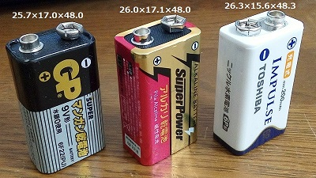

東芝 充電式IMPULSE 充電池（006P型）について
2016年08月02日 カテゴリー：実験等
エフェクターを使う上で欠かせない006P型9V電池ですが、今は100円ショップで簡単に安く手に入るようになりました。しかしながらライブの度に買い換えている人も少なくないと思います。
そこで充電式の9V電池を試してみました。東芝の「充電式IMPULSE」充電池が入手性と信頼性を考えるとよいのかなと思います。以前DLGと書いてある紫色の9.6V充電地が安売りされていて買ったのですが、充電1回目で膨らんできたため捨てたことがあります……
とりあえず手持ちの006P型電池の寸法（単位：mm）と重量を測ってみました。

・ダイソーマンガン乾電池（中国製） 25.7×17.0×48.0 38.3g
・ダイソーアルカリ乾電池（中国製） 26.0×17.1×48.0 43.8g
・IMPULSEニッケル水素電池（中国製） 26.3×15.6×48.3（公式サイト：27.0×16.3×48.8） 39.0g
・日本工業規格（JIS） 26.5×17.5×48.5
大きいといわれているIMPULSEですが、実測ではなんとか規格範囲内です。
電圧はe電子工房というサイトの「バッテリ容量比較(006P)」にGPニッケル水素電池のデータがあるので参考になります。IMPULSEも測定してみましたが大体同じような感じです。公称電圧8.4Vですが、9V程度出るので普通のアルカリ電池と変わりありません。
通販サイトのレビューによると放電しすぎると充電できなくなる場合があるようですが、私は今のところ問題なく使えています。充電時間がもう少し速ければいいなと思います。